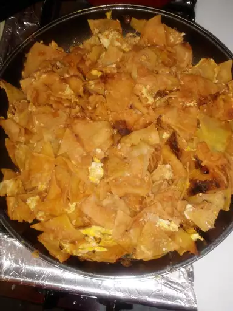

Chilaquiles

Description
Chilaquiles are a traditional Mexican dish made with tortilla chips, eggs, salsa and cheese.
This dish is typically served with refried beans and rice.
Ingredients
- 2 cups of oil for frying
- 30 (6 inch) tortillas, torn into strips
- 1/4 cup chopped onion
- 6 large eggs, lightly beaten
- 2 teaspoons salt
- 1 (7.75 ounce) can Mexican-style hot tomato sauce
- 1/2 cup water
- 1/2 cup shredded Monterey Jack Cheese
Steps